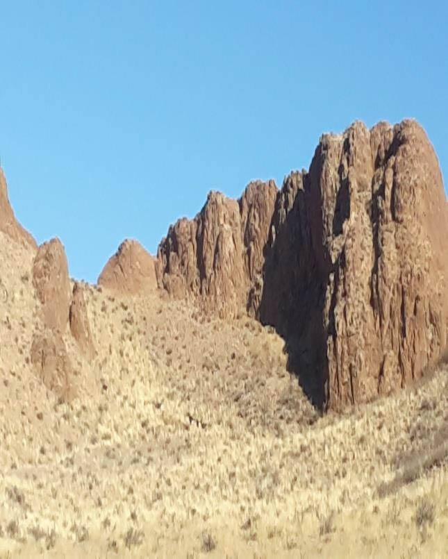
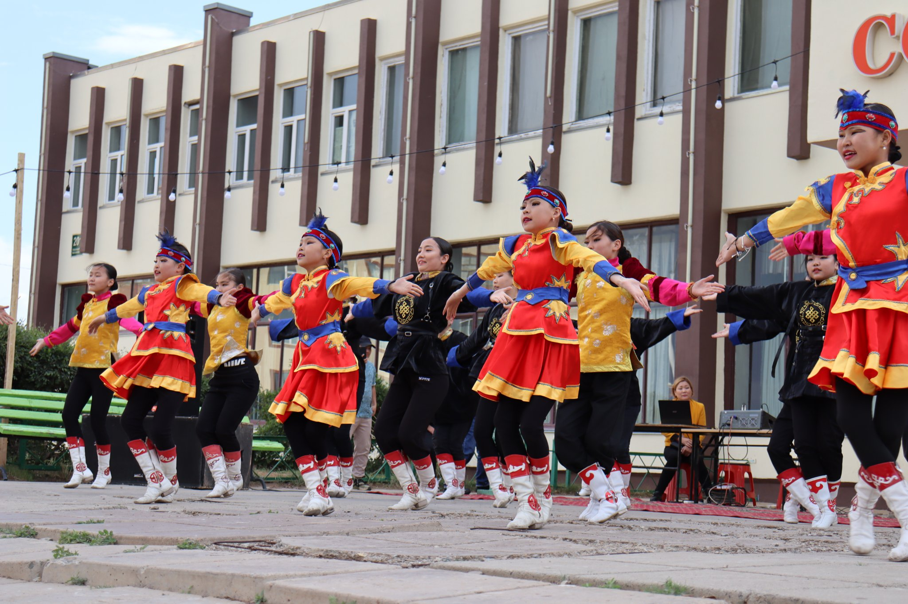
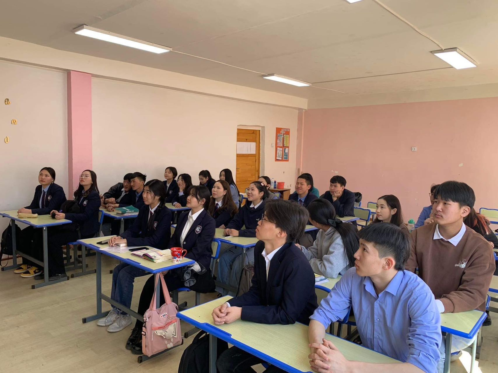
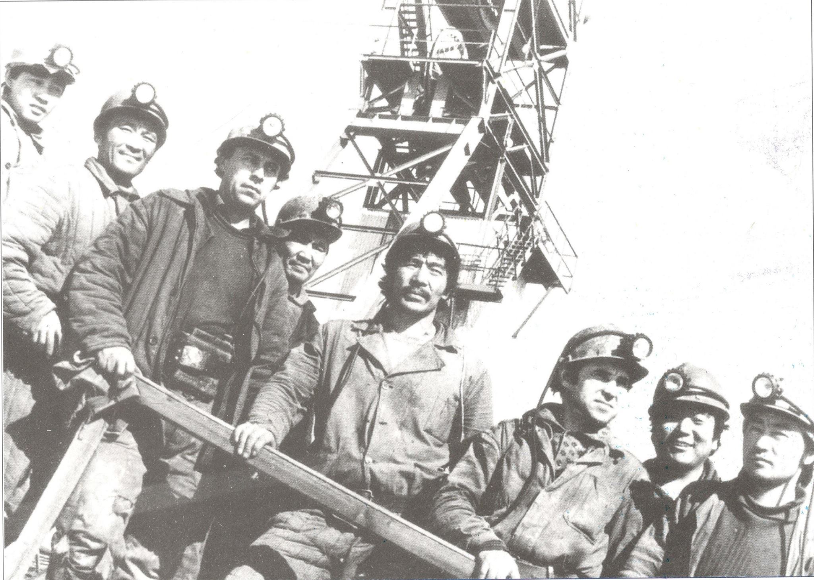

Газарзүй
Бор-Өндөр хот нь далайн түвшнээс дээш 1000-1500 метр өргөгдсөн бөгөөд физик газарзүйн хувьд Монголын дорнод талын их мужийн Халхын дундад ухаа гүвээт талын тойрогт, Байгалийн бүсийн хувьд хуурай хээрийн бүсэд тус тус багтдаг. Газар хөдлөлийн эрчим 6 балл. Газарзүйн байршлын хувьд Өмнөд хэсгээрээ Дорноговь аймгийн Даланжаргалан, бусад хэсгээрээ Хэнтий аймгийн Дархан сумтай хиллэдэг. Нийслэл Улаанбаатар хотоос 348 км, Хэнтий аймгийн төв Өндөрхаанаас 180 км-т оршдог. Хотын нутаг дэвсгэрийн хэмжээ 144 км².[1] Үүнээс: Уул уурхайн зориулалттай газар 9500 га, 67,8%. Ойн сан бүхий газар, усан сан бүхий газар, тусгай хэрэгцээний газар 0 га, 0,0% Тосгон, суурингийн газар 3000 га, 21,5%. Дэд бүтцийн газар 1500 га, 10,7%
Цаг агаар
Уур амьсгал: Хуурай хээрийн, цөлөрхөг говь хээрийн уур амьсгал зонхилно. Дулаан зунтай чийг дутмаг мужид багтана. Бүх нутгаар агаарын хэмийн харьцангуй жигд тархалттай байдаг. Ургамшил тачирхан, чулуурхаг буюу элсэрхэг гадаргатай тул наранд халж агаарын хэмийг дээшлүүлдэг. Хамгийн их хүйтрэл 1-р сард дундаж температур -28 цельсийн градус, хамгийн их халуун 7-р сард дундаж температур +25 цельсийн градус болдог. Агаарын температурын сарын дундаж нь бүх нутгаар 8-13 градус байдаг ба олон жилийн дунджаар 1,5 градусаар дулаан байна. Жилд дунджаар 200 орчим мм тунадас унадаг. Нутгийн ноёлох салхи баруун хойноосоо ихэвчлэн салхилдаг ба хамгийн их салхи шуургатай үе 3, 4, 5-р сар юм. Жилийн дундаж салхины хурд 6-8 м/с.
Хүн ам
2017 оны байдлаар хотын хүн ам нийт 2660 өрх, 8883 хүн тоологдсон ба үүнээс эрэгтэй 4442, эмэгтэй 4441, бүртгэлтэй түр оршин суугч 880 хүн. Нийт хүн амын 99.63 хувийг Халх ястан, 0.12 хувийг Казах ястан, 0.25 хувийг Дөрвөд ястан эзлэн амьдарч байна. Хүн амын тоогоор Хэнтий аймгийн 18 сумаас эхнээсээ 1-д, газар нутгийн хэмжээгээр 18-д ордог /аймгийн төвийг оролцуулалгүйгээр/ хүн амын нягтралаар хамгийн өндөр 60,99 хүн/га сум юм. Нийт хүн амын 70 орчим хувь нь 35 хүртлэх насны залуучууд, 51 хувь нь эмэгтэйчүүд, хүн амын 45.1% нь орон сууцанд амьдардаг. МУ-ын хөдөлмөрийн баатар Сурахын Ганхуяг, МУ-ын гавъяат жүжигчин Цэдэндоржийн Ичинхорлоо, гавъяат эдийн засагч Цэрэнгийн Дагдан, гавъяат уурхайчин Буувангийн Түмэндэмбэрэл, зэрэг алдартнууд Бор-Өндөр хотод ажиллаж амьдардаг.
Боловсрол
Төрийн 1, хувийн 1 ЕБС-ийн сургуультай. Улсын тэргүүний "Бор-Өндөр" цогцолбор сургууль нь 1981 онд байгуулагдсан. 3000 орчим сурагчидтай, 100 гаруй багш, ажилчидтай. Хувийн "Их-Ирээдүй" бага сургууль нь 1998 онд байгуулагдсан.
Эдийн засаг
Жонш, төмөр олборлолт, боловсруулах үйлдвэр нь тус хотын эдийн засгийг тэтгэдэг бөгөөд анх Бор-Өндөр нь жоншны үйлдвэрийг түшиглэн байгуулагдсан юм. Монгол-Ороzын хамтарсан Монголросцветмет ТӨҮГ тус жоншны уурхай, үйлдвэрийг голлон эзэмшдэг. Үйлдвэрийн бүх бүтээгдэхүүн ОХУ, Украин, Хятад зэрэг орнууд руу төмөр замаар дамжин экспортлогддог[2]. Уулын баяжуулах үйлдвэр нь 1981 онд ашиглалтанд орсон одоогийн байдлаар нийт 1135 ажилтан ажиллаж байна. Хүчин чадал: Жоншны хүдэр олборлолт 300,000-360,000 тн 95%-н агуулгатай хайлуур жонш/caf2/ 140,000-160,000 тн 75%-н агуулгатай бүхэллэг жонш 15,000-20,000 тн 65%-н фторын агуулгатай төмрийн баяжмал 500,000 тн Хуурай төмрийн баяжмал 205,000 тн Нойтон төмрийн баяжмал 250,000 тн тус тус олборлож байна Мөн Герман улсын “Констант” пүүсийн тусламжтайгаар баригдсан мах боловсруулах үйлдвэр ажилладагийн зэрэгцээ гахай үржүүлэх цогцолбор, Хэнтий аймгийн МХГ-ын хяналтын алба, Татвар, Нийгмийн даатгалын тасаг, УБТЗ-ын Бор-Өндөр өртөө, Гүний гаалийн салбар, Бор-Өндөр цогцолбор сургууль, хувийн Их-Ирээдүй дунд сургууль, “Энхжин”, “Бүжинхэн” болон "Нархан" цэцэрлэг, Сум дундын шүүх, прокурор, шүүхийн шийдвэр гүйцэтгэх газар, Цагдаагийн хэлтэс, Хас банк, ХААН банк, Төрийн банкны салбарууд, Эргэлтийн эмийн сан, Холбооны салбар, Монгол шуудан, Нэгдсэн эмнэлэг, Өрхийн эмнэлэг, Мэргэжлийн сургалт үйлдвэрлэлийн төв зэрэг төрийн болон түшиглэсэн байгууллагууд үйл ажиллагаа явуулж байна. Тус хотын нутаг дэвсгэрт тохижилт үйлчилгээний “Бор-Өндөр хот тохижилт” ОНТҮГ, худалдааны “Пүрдэм” ХХК, “Дэлгэрнуур” ХХК, “Морьтын даваа” ЗБН зэрэг томоохон ААН, 100 гаруй жижиг дунд худалдаа үйлчилгээний цэг салбарууд хотын иргэдэд үйлчилж байна. Сумын хэмжээнд 2017 оны байдлаар нийт 77,014 мянган мал тоологдсон.бэлчээрийн хомсдол ажиглагдаж буй.
Түүх
Жоншны ордын нөөцийг ЗХУ-ын геологичид 1950-иад онд нээн илрүүлжээ. 1973 онд Зөвлөлт-Монголын хамтарсан үйлдвэр байгуулагдсан бөгөөд одоо 51%-г Монгол, 49%-г Оросын засгийн газар эзэмшдэг. Бор-Өндөр хот нь анх БНМАУ-ын АИХ-ын тэргүүлэгчдийн 1981 оны 10 сарын 14-ний өдрийн 347-р зарлигаар Хэнтий аймгийн "Хэрлэн хороо" болон байгуулагдсан бөгөөд УИХ-ын 1994 оны 36-р тогтоолоор "Хэрлэн хот", УИХ-ын 1995 оны 7 сарын 3-ны өдрийн 55 дугаар тогтоолоор Хэнтий аймгийн харъяа "Бор-Өндөр" нэртэй аймгийн зэрэглэлтэй хот, улмаар УИХ-ын 2012 оны 2 сарын 9-ний 15-р тогтоолоор Бор-Өндөр сум байгуулагдсан.
Түүхийн дурсгалт газрууд
Бор-Өндөр сумын 6 дугаар багийн нутаг дэвсгэрт түүхийн дурсгалт газрууд оршдог. Эртний булш бунхан, хэргэсүүр байдаг. Олон овоот, зугаалгын хад, хүслийн мод, Далантүрүү рашаан, Агуйт зэрэг олон сайхан байгалийн үзэсгэлэнт газар байдаг.
Дэд бүтэц
Бор-Өндөр хот нь төмөр замын сүлжээнд холбогдсон. Мөн 43 км зайд байх Дархан сумын төв болон 144 км зайд байх Өндөрхаан хоттой сайжруулсан шороон замаар холбогдоно. Мөн 43 км зайд орших, Дорноговь аймгийн Хажуу-Улааны уурхай, 65 км зайд орших Иххэт сум, Айраг сум, 59 км зайд орших Даланжаргалан сумд хүртэл сайжруулсан шороон зам бий. 2022 онд Даланжаргалан сумаар дамжин хатуу хучилттай засмал замын сүлжээнд холбогдоно, Улаанбаатар хүрнэ. Багануур-Чойрын зүүн бүсийн 110 кв-ын өндөр хүчдэлийн сүлжээнд холбогдсоны дээр МЦХК, Мобиком, Скайтелийн,Юнител, Жи-Мобайлын үүрэн телефоны компаниуд үйл ажиллагаа явуулж, интернэт, шилэн кабельд бүрэн нэвтэрсэн. 1993 онд сумын оршин суугчид кабелийн 14 сувагтай сансарын олон сувгийн телевизтэй болж байсан.
Сумын байгаль орчин, ан амьтан, хөрс ургамал
Хөрсний шинж чанар: Бор-Өндөр сумын нутаг дэвсгэрт тархсан хөрсийг шинж чанар газарзүйн байршил хөрс үүсгэгч нөхцөлөөр нь: 1. Долгирхог тал, хээрийн ба өргөн хөндийн хөрс 2. Голын хөндийн, нугын хээршсэн хөрс 3. Уулархаг, уулын хөрс 4. Хээрийн элсэрхэг , хүрэн хөрс гэж хуваана. Долгиорхог хээр талын ба өргөн хөндийн хөрс зонхилох хувийг эзлэнэ. Ховор тохиолдох нуур тойрмын зах хэсгээр хужир марзтай хөрс тохиолддог. Түр зуурын ус тогтдог хотгоруудад шаварлаг хөрс үүссэн байна. Хуурай сайрын хөндий болон тэгш талд элсэрхэг хөрс тархсан байна. Ургамал зүйн байдал: Цахилдаг, алаг өвст, хиаг-хялганат , бужмаг , хонгорзул, улалж, бут бударгана, харгана, халгай, буурцагт өвсний төрөл зонхилно. Үетэн хялганат, хазаар өвс, хиагхялганат, шарилж, лууль, дэрс болон амт чанар , шимт сайтай үетэн, буурцагт, алаг өвсний төрлийн ургамал зонхилно. Мөн гол, булаг,нуур тойрмын хөвөөгөөр хиаг, хазаар өвс, салхин ерхөг, дэрс, харгана, адамсын агь, хэрс зэрэг ургамал ургадаг ба сумын урд говирхог талаараа таана, мангир, хөмүүл, ерхөг, үетэн хялганат, алаг өвс, жижиг бутан үетэн, ботуульт ургамал зонхилон ургадаг байна. Нам доор хотгор газруудаар дэрс, хааяа тохиолдох булгийн дэргэд зэгс, сухай, бургас ургана. Ан амьтан: Бор-Өндөр сум нь 77 мянган тоо толгой таван хошуу малтай, уул хадаараа 30 гаруй аргаль янгир бэлчдэг, цагаан зээр бэлчээрлэдэг, цаашдаа тарвага нутагшуулах зорилготой байна.
Цаашид хөгжүүлэх боломжтой үйлдвэрлэл үйлчилгээ, сумын хэтийн хөгжлийн төлөвийн талаарх мэдээлэл
Бор-Өндөр орчмын сумдын нутаг дэвсгэрийн өнөөгийн судалгаанд тулгуурлан ашигт малтмалын ордыг ашиглан уул уурхайн үйлдвэрлэл, мал аж ахуйн түүхий эдэд түшиглэн малын гаралтай бүтээгдэхүүн боловсруулах жижиг дунд үйлдвэрлэл хөгжүүлэх, түүхэн дурсгалт газрууд, амралт рашаан сувилалд тулгуурласан дотоод гадаадын аялал жуулчлалыг хөгжүүлэн тойргийн сумдын эдийн засагт нөлөөлөхүйц бичил бүсийн төв болгон хөгжүүлэх хэтийн төлөв байна. Энэ ажлын хүрээнд хийгдсэн хамгийн том алхам бол “Бор-Өндөр” хот байгуулалтын нэгдсэн төслийг Монгол орныг бүсчлэн хөгжүүлэх үзэл баримтлалтай уялдуулан боловсруулж, Монгол Улсын Дэд Бүтцийн Хөгжлийн сайдын 1996 оны 10 дугаар 29-ний өдрийн 316 дугаар тушаалаар батлуулсан юм. Энэхүү төсөл нь Бор-Өндөр орчмын бичил бүсийг хөгжүүлэх төсөл, Бор-Өндөр хотын ерөнхий төлөвлөгөө, БорӨндөр хотын дэвсгэр нутгийн хот байгуулалт-эдийн засгийн үнэлгээ гэсэн үндсэн 3 хэсэгтэй бөгөөд дагалдах зураг төслийн хамтаар хийгдсэн байдаг.